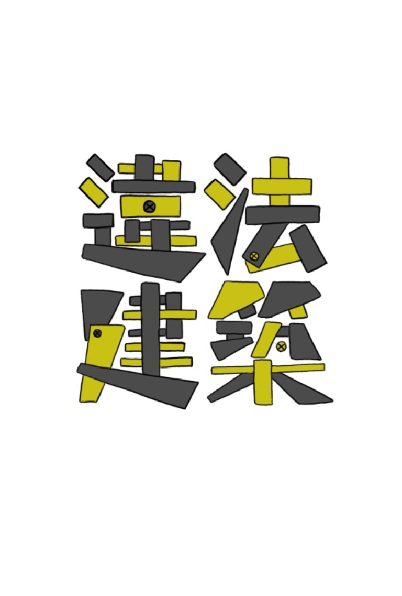
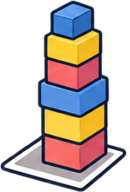
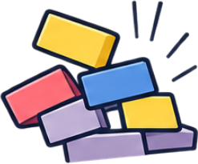

1
RECEIVE A PART
パーツを
受け取ろう！
じゃんけんをして、勝った人は自分の右隣の人にパーツを1つ渡します。

この度は、ボードゲーム『違法建築』を ご購入いただき、誠にありがとうございます。
こちらの不手際により、 商品に土台カードが同封されておりませんでした。
ご購入いただいた皆さまには、 ご迷惑とお手数をおかけしてしまい、 大変申し訳ございません。
土台カードは、以下のいずれかの方法で ご用意いただけます。
紙や厚紙に
14cm × 14cm の正方形を描き、
切り取ってご使用ください。
この度は、こちらの確認不足により
ご不便をおかけしてしまい、
重ねてお詫び申し上げます。
『違法建築』を楽しんでいただけましたら幸いです。
LET'S BUILD
じゃんけんをして、パーツを受け取り、土台カードの上に設置します。
時計回りに繰り返して、どこまで高く積み上げられるか挑戦しましょう！
じゃんけんをして、勝った人は自分の右隣の人にパーツを1つ渡します。
パーツを受け取った人は、土台カードの上にパーツを設置します。
そして、パーツを受け取った人は、自分の次の番の人にパーツを1つ選んでもらい、受け取ります。
土台カードの上に直接パーツを置けるのは、最初の1周目だけ！
2周目以降は、すでに設置されたパーツの上にどんどん積み上げていきましょう。
さあ、どこまで高く積み上げられるかな？
これを時計回りに繰り返します。

積み上げたパーツが土台カードから落ちてしまったら、その人の負け！

BUILDING TIP
完璧な建物より、みんなで笑える建物。
迷ったら、いちばん面白そうな場所に置きましょう。